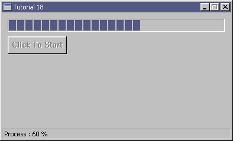
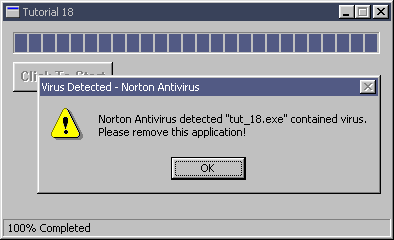

| Sulaiman Chang Personal Website |
|
Tutorial 18 : Common Controls
format PE GUI 4.0
entry start
include '%fasminc%\win32a.inc'
section '.data' data readable writeable
wndH dd ? ;handle for window
insH dd ? ;handle for instance
wndClsName db 'TUT_18',0
wndTitle db 'Tutorial 18',0
wndCls WNDCLASS
wndMsg MSG
ctlClsNamePb db 'msctls_progress32',0
ctlClsNameBtn db 'BUTTON',0
pb1 equ 1
pb1H dd ?
pb1StepCurrent dd ? ;current step value
pb1Range dd ? ;range
pb1StepInc dd ? ;increase step value
sb1 equ 2
sb1H dd ?
sbBuffer db ' Process : '
sbBuffer1 rb 0xF
sbf1 db '%i %%',0
sbf2 db ' 100% Completed',0
msg1Title db 'Virus Detected - Norton Antivirus',0
msg1Txt db 'Norton Antivirus detected "tut_18.exe" contained virus.',13,10,'Please remove this application!',0
tm1 equ 3
tm1H dd ?
btn1 equ 4
btn1H dd ?
btn1Txt db 'Click To Start',0
section '.code' code readable executable
start:
invoke GetModuleHandle,
mov [insH],eax
mov [wndCls.hInstance],eax
mov [wndCls.style],CS_HREDRAW or CS_VREDRAW
mov [wndCls.lpfnWndProc],window_procedure
mov [wndCls.lpszClassName],wndClsName
mov [wndCls.hbrBackground],COLOR_BTNFACE+1
invoke LoadIcon,NULL,IDI_APPLICATION
mov [wndCls.hIcon],eax
invoke LoadCursor,NULL,IDC_ARROW
mov [wndCls.hCursor],eax
invoke RegisterClass,wndCls
invoke CreateWindowEx,\
0,\
wndClsName,\
wndTitle,\
WS_OVERLAPPEDWINDOW + WS_VISIBLE - WS_MAXIMIZEBOX - WS_SIZEBOX,\
CW_USEDEFAULT,\
CW_USEDEFAULT,\
394,\
240,\
NULL,\
NULL,\
[insH],\
NULL
mov [wndH],eax
;+---------------------------+
;| entering the message loop |
;+---------------------------+
window_message_loop_start:
invoke GetMessage,wndMsg,NULL,0,0
or eax,eax
je window_message_loop_end
invoke TranslateMessage,wndMsg
invoke DispatchMessage,wndMsg
jmp window_message_loop_start
window_message_loop_end:
invoke ExitProcess,0
;+----------------------+
;| the window procedure |
;+----------------------+
proc window_procedure,hWnd,uMsg,wParam,lParam
push ebx esi edi
cmp [uMsg],WM_CREATE
je wmCREATE
cmp [uMsg],WM_TIMER
je wmTIMER
cmp [uMsg],WM_COMMAND
je wmCOMMAND
cmp [uMsg],WM_DESTROY
je wmDESTROY
wmDEFAULT:
invoke DefWindowProc,[hWnd],[uMsg],[wParam],[lParam]
jmp wmBYE
wmDESTROY:
invoke PostQuitMessage,0
cmp [tm1H],0
jne @f
invoke KillTimer,[hWnd],[tm1H]
@@:
wmTIMER:
invoke SendMessage,[pb1H],PBM_STEPIT,0,0
invoke SendMessage,[pb1H],PBM_GETPOS,0,0
cinvoke wsprintf,sbBuffer1,sbf1,eax
invoke SendMessage,[sb1H],SB_SETTEXT,0,sbBuffer
sub [pb1StepCurrent],2
cmp [pb1StepCurrent],0
jne @f
invoke KillTimer,[hWnd],[tm1H]
mov [tm1H],0
invoke SendMessage,[sb1H],SB_SETTEXT,0,sbf2
invoke MessageBox,[hWnd],msg1Txt,msg1Title,MB_OK + MB_ICONWARNING
@@:
jmp wmBYE
wmCOMMAND:
cmp [wParam],BN_CLICKED shl 16 or 4
je wmCOMMAND_btn1
jmp wmBYE
wmCOMMAND_btn1:
invoke SetTimer,[hWnd],tm1,100,NULL
mov [tm1H],eax
invoke EnableWindow,[btn1H],FALSE
jmp wmBYE
wmCREATE:
invoke CreateWindowEx,NULL,ctlClsNamePb,NULL,WS_CHILD + WS_VISIBLE,\
10,10,367,22,[hWnd],pb1,[insH],NULL
mov [pb1H],eax
mov eax,100
mov [pb1StepCurrent],eax
shl eax,16
mov [pb1Range],eax
mov [pb1StepInc],2
call pb1_config
invoke CreateStatusWindow,WS_CHILD + WS_VISIBLE,NULL,[hWnd],sb1
mov [sb1H],eax
invoke CreateWindowEx,NULL,ctlClsNameBtn,btn1Txt,WS_CHILD + WS_VISIBLE + BS_PUSHBUTTON,\
10,40,100,30,[hWnd],btn1,[insH],NULL
mov [btn1H],eax
jmp wmBYE
wmBYE:
pop edi esi ebx
return
endp
proc pb1_config
invoke SendMessage,[pb1H],PBM_SETRANGE,0,[pb1Range]
invoke SendMessage,[pb1H],PBM_SETSTEP,[pb1StepInc],0
return
endp
section '.idata' import data readable
library KERNEL32, 'KERNEL32.DLL',\
USER32, 'USER32.DLL',\
COMCTL32, 'COMCTL32.DLL'
import KERNEL32,\
GetModuleHandle, 'GetModuleHandleA',\
ExitProcess, 'ExitProcess'
import USER32,\
RegisterClass, 'RegisterClassA',\
CreateWindowEx, 'CreateWindowExA',\
DefWindowProc, 'DefWindowProcA',\
LoadCursor, 'LoadCursorA',\
LoadIcon, 'LoadIconA',\
SendMessage, 'SendMessageA',\
GetMessage, 'GetMessageA',\
SetTimer, 'SetTimer',\
KillTimer, 'KillTimer',\
wsprintf, 'wsprintfA',\
MessageBox, 'MessageBoxA',\
EnableWindow, 'EnableWindow',\
DestroyWindow, 'DestroyWindow',\
TranslateMessage, 'TranslateMessage',\
DispatchMessage, 'DispatchMessageA',\
PostQuitMessage, 'PostQuitMessage'
import COMCTL32,\
CreateStatusWindow, 'CreateStatusWindow'
Result :  |
| Copyright © 2004 Sulaiman Chang. All Rights Reserved. |